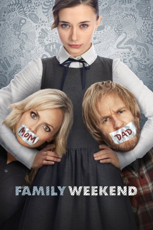

#11682 Family Weekend
 
 IMDB-Wertung: 6.3 / 10
IMDB-Wertung: 6.3 / 10  Tomatometer: 36
Tomatometer: 36  Metascore: 35
Metascore: 35 
Die 16-jährige Emily Smith-Dungy hat hohe Ziele. Von ihren Eltern ist sie zusehends genervt. Ihre Mutter Samntha ist nur auf die Karriere fokussiert und ihr Vater Duncan, ein Künstler, das genaue Gegenteil davon. Als sie den Seilspringen-Wettbewerb ihrer Tochter verpassen, greift Emily zu einem drastischen Mittel, um die Ordnung zu Hause wieder herzustellen. Gemeinsam mit ihren Geschwistern nimmt sie ihre Eltern als Geiseln und hofft, so endlich wieder wie eine Familie miteinander leben zu können.
Jahr: 2013
Dauer: 101 Minuten
FSK: 6
Land: USA Studio: IITonspuren:
Untertitel:
Auflösung: SD (716x296) Größe: 953 MB
Genre: Drama, Komödie
Regisseur: Benjamin Epps
Drehbuch: Matt K. Turner
Soundtrack: Russ Howard III, Mateo Messina
Darsteller:
 Kristin Chenoweth als Samantha Smith-Dungy
Kristin Chenoweth als Samantha Smith-Dungy Matthew Modine als Duncan Dungy
Matthew Modine als Duncan Dungy- Olesya Rulin als Emily Smith-Dungy
 Joey King als Lucinda Smith-Dungy
Joey King als Lucinda Smith-Dungy- Shirley Jones als GG
- Eddie Hassell als Jackson Smith-Dungy
- Chloe Bridges als Kat
- Adam Saunders als Rick
 Robbie Tucker als Mickey Smith-Dungy
Robbie Tucker als Mickey Smith-Dungy- Peter Gail als Deputy Tyler
- Chase Yi als Chris
- Lauren LaStrada als Officer Reyes
- Arthur Cartwright als James Thompson
- Cindy Chang als Siu Jin
- Jordan Mahome als Regional Announcer
- Kyle Misak als Kid Drinking Coca-Cola
- Lynn Anderson als Melissa Barnum's Mother (uncredited)
- Paul Black als Wildlife Presenter
- Jamie Gasper als Cheering girl
- Thomas Hoffman als State Announcer
- Marc Bowers als Tournament Audience Member (uncredited)
- Patricia Lynne Cissell als Tournament audience (uncredited)
- Tiffani Elise Edwards als Student (uncredited)
- Ryan Remisoski als Regional Judge (uncredited)
- Jacob Scherba als Extra (uncredited)
Datei: X:\NEU\Family Weekend (2013, FSK6, 716x296).mkv seit 16.08.2019
 Es gibt insgesamt 187 Filme in der Gruppe 'NEU'
Es gibt insgesamt 187 Filme in der Gruppe 'NEU'